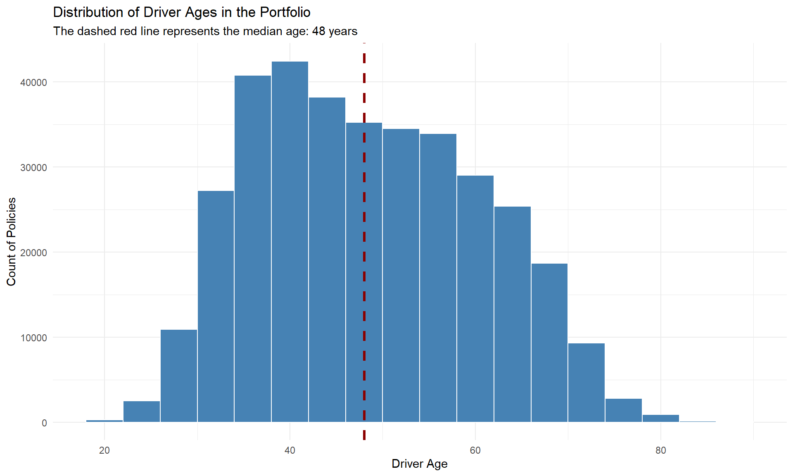
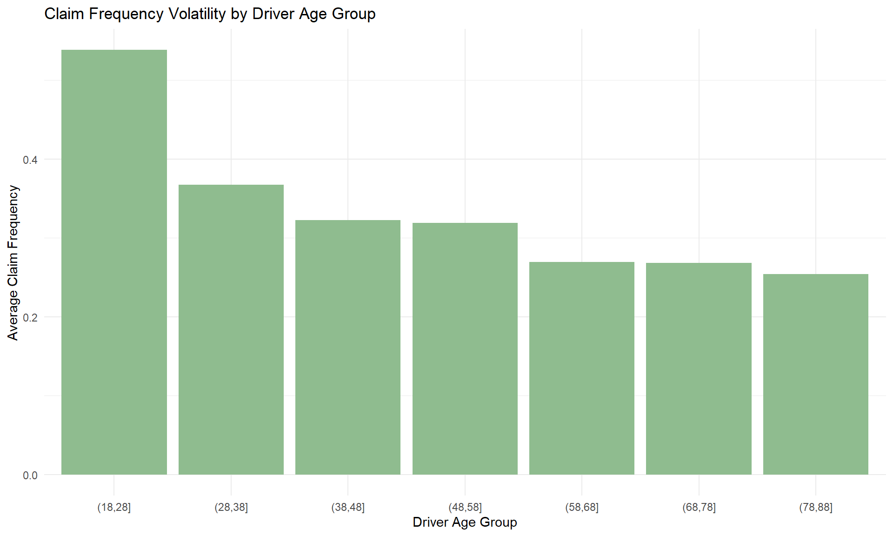
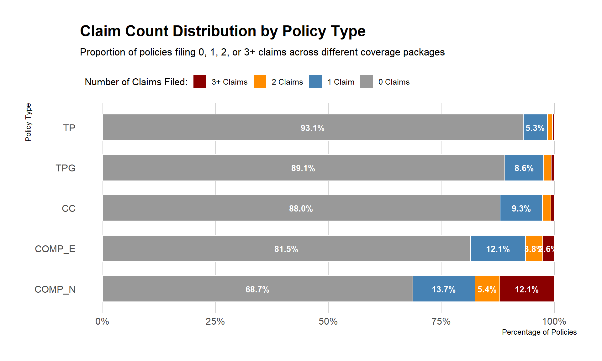
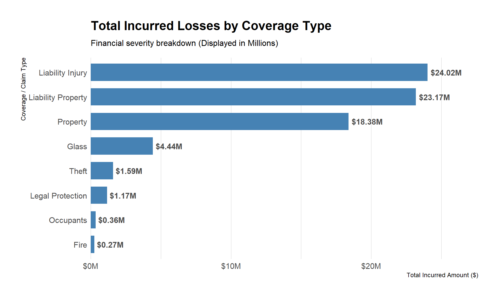
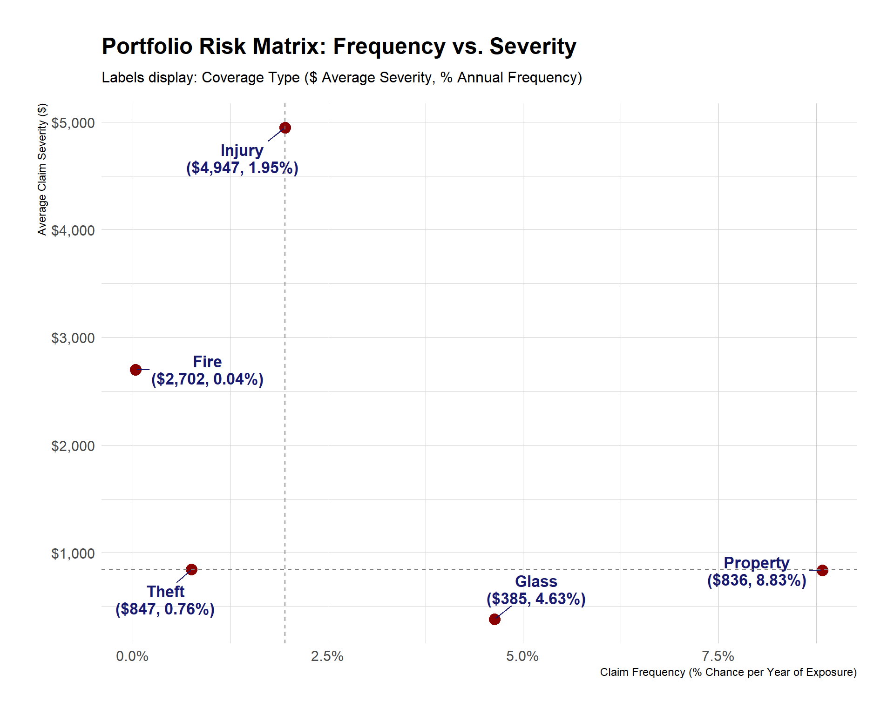

pacman::p_load(
tidyverse,
treemapify,
colorspace,
hrbrthemes,
ggdist,
ggstatsplot,
plotly,
corrplot,
dplyr,
ggplot2,
forcats,
scales,
ggrepel
)Take-home Exercise 1
Overview
Setting the Scene
Insurance providers often face under-performing portfolios, driven by unclear causes of poor profitability and high market volatility. This project explores how visual analytics can help uncover hidden loss drivers, risk patterns and segmentation opportunities, and improved underwriting strategies.
Using a dataset from Mendeley Data, this analysis focuses on numerical, categorical, and temporal variables through univariate (one variable) and bivariate (two variables) analyses.
Empty data cells are ignored based on the Missing Completely at Random (MCAR) mechanism, as all variables can be considered completely independent of any observed values.
Our Objective
Gain deeper insights into portfolio performance and identify key factors affecting profitability and volatility in our portfolios.
Getting Started
Load Packages
We load the following R packages using the pacman::p_load() function:
- tidyverse: Core collection of R packages designed for data science
- treemapify: For creating treemap visualisations with ggplot2
- colorspace: For perceptually-based colour palettes
- hrbrthemes: Additional ggplot2 themes and typography
- ggdist: For visualisations of distributions and uncertainty
- ggstatsplot: For ggplot2-based plots with statistical annotations
- plotly: For interactive web-based visualisations
- corrplot: For visualising correlation matrices
- ggrepel: For non-overlapping text labels in ggplot2
- dplyr / ggplot2 / forcats / scales: Core data wrangling and visualisation utilities
Import Data
The dataset used is a motor insurance portfolio dataset retrieved from Mendeley Data. It is a semicolon-delimited CSV file and is imported as follows:
df <- read_delim("Dataset of motor insurance portfolio.csv",
delim = ";",
locale = locale(decimal_mark = "."),
show_col_types = FALSE)Data Pre-processing
Variable Type Conversion and Derived Metrics
Several variables are coerced to their appropriate types (factors and numerics). Three important derived metrics are also computed:
| Derived Metric | Formula |
|---|---|
| Loss Ratio | Total Incurred Losses / Total Premium |
| Claim Frequency | Total Claims / Total Exposure |
| Claim Severity | Total Incurred / Total Claims |
Additionally, rows with missing values in key fields (vehicle_age, age_driving_licence, fuel_type, vehicle_value) are dropped, and records with invalid driver age (< 18) or negative vehicle age are filtered out.
clean_df <- df %>%
drop_na(vehicle_age, age_driving_licence, fuel_type, vehicle_value) %>%
mutate(
policy_type = as.factor(policy_type),
policy_status = as.factor(policy_status),
business_type = as.factor(business_type),
payment_frequency = as.factor(payment_frequency),
bonus_score = as.factor(bonus_score),
fuel_type = as.factor(fuel_type),
vehicle_brand = as.factor(vehicle_brand),
municipality_type = as.factor(municipality_type),
circulation_area = as.factor(circulation_area),
year = as.factor(year),
total_exposure = as.numeric(total_exposure),
total_claims = as.numeric(total_claims),
total_premium = as.numeric(total_premium),
total_incurred = as.numeric(total_incurred)
) %>%
mutate(
loss_ratio = ifelse(total_premium > 0, total_incurred / total_premium, 0),
claim_frequency = ifelse(total_exposure > 0, total_claims / total_exposure, 0),
claim_severity = ifelse(total_claims > 0, total_incurred / total_claims, 0)
) %>%
filter(
total_premium > 0,
driver_age >= 18,
vehicle_age >= 0
)
glimpse(clean_df)Rows: 352,289
Columns: 50
$ insured_id <dbl> 1, 2, 2, 2, 3, 3, 3, 4, 4, 4, 5, 5, 5, 6, …
$ year <fct> 2022, 2022, 2023, 2024, 2022, 2023, 2024, …
$ policy_type <fct> COMP_E, COMP_E, COMP_E, COMP_E, COMP_E, CO…
$ policy_status <fct> C, A, A, A, A, A, A, A, A, A, A, A, A, A, …
$ business_type <fct> NB, P, P, P, NB, P, P, NB, P, P, NB, P, P,…
$ payment_frequency <fct> A, A, A, A, S, S, S, A, A, A, A, A, A, A, …
$ bonus_score <fct> G, G, G, G, G, G, G, G, G, G, G, G, G, G, …
$ driver_age <dbl> 48, 43, 44, 45, 45, 46, 47, 32, 33, 34, 39…
$ vehicle_age <dbl> 22, 24, 25, 26, 26, 27, 28, 12, 13, 14, 20…
$ age_driving_licence <dbl> 26, 19, 19, 18, 19, 19, 19, 19, 19, 19, 19…
$ fuel_type <fct> G, D, D, D, D, D, D, D, D, D, D, D, D, D, …
$ vehicle_value <dbl> 149511.44, 65065.12, 65065.12, 65065.12, 5…
$ seats <dbl> 4, 8, 8, 8, 7, 7, 7, 5, 5, 5, 5, 5, 5, 5, …
$ power_to_weight_ratio <dbl> 3.92, 10.15, 10.15, 10.15, 9.19, 9.19, 9.1…
$ vehicle_brand <fct> PORSCHE, MERCEDES, MERCEDES, MERCEDES, KIA…
$ municipality_type <fct> I, I, I, I, I, I, I, I, I, I, C, I, I, C, …
$ circulation_area <fct> U, U, U, U, R, R, R, R, R, R, R, U, U, R, …
$ total_premium <dbl> 279.5576, 546.6234, 548.7526, 584.6324, 68…
$ liability_premium <dbl> 30.60232, 114.33336, 110.66689, 122.09253,…
$ property_damage_premium <dbl> 121.9127, 303.1060, 304.9560, 305.2251, 35…
$ theft_premium <dbl> 112.361489, 80.784824, 83.521384, 107.8868…
$ fire_premium <dbl> 3.832441, 7.826861, 6.151465, 5.842892, 7.…
$ glass_premium <dbl> 8.305788, 30.091751, 32.861626, 31.101584,…
$ legal_protection_premium <dbl> 2.043622, 7.812747, 7.655637, 10.084173, 6…
$ occupants_premium <dbl> 0.4992053, 2.6679084, 2.9395659, 2.3992827…
$ total_claims <dbl> 0, 0, 1, 2, 0, 0, 0, 0, 0, 0, 0, 0, 0, 5, …
$ liability_claims <dbl> 0, 0, 1, 1, 0, 0, 0, 0, 0, 0, 0, 0, 0, 0, …
$ liability_property_claims <dbl> 0, 0, 1, 1, 0, 0, 0, 0, 0, 0, 0, 0, 0, 0, …
$ liability_injury_claims <dbl> 0, 0, 0, 0, 0, 0, 0, 0, 0, 0, 0, 0, 0, 0, …
$ property_claims <dbl> 0, 0, 0, 1, 0, 0, 0, 0, 0, 0, 0, 0, 0, 5, …
$ theft_claims <dbl> 0, 0, 0, 0, 0, 0, 0, 0, 0, 0, 0, 0, 0, 0, …
$ fire_claims <dbl> 0, 0, 0, 0, 0, 0, 0, 0, 0, 0, 0, 0, 0, 0, …
$ glass_claims <dbl> 0, 0, 0, 0, 0, 0, 0, 0, 0, 0, 0, 0, 0, 0, …
$ legal_protection_claims <dbl> 0, 0, 0, 0, 0, 0, 0, 0, 0, 0, 0, 0, 0, 0, …
$ occupants_claims <dbl> 0, 0, 0, 0, 0, 0, 0, 0, 0, 0, 0, 0, 0, 0, …
$ total_incurred <dbl> 0.000, 0.000, 233.013, 2586.361, 0.000, 0.…
$ liability_incurred <dbl> 0.000, 0.000, 233.013, 1035.000, 0.000, 0.…
$ liability_property_incurred <dbl> 0.000, 0.000, 233.013, 1035.000, 0.000, 0.…
$ liability_injury_incurred <dbl> 0.000, 0.000, 0.000, 0.000, 0.000, 0.000, …
$ property_incurred <dbl> 0.000, 0.000, 0.000, 1551.361, 0.000, 0.00…
$ theft_incurred <dbl> 0, 0, 0, 0, 0, 0, 0, 0, 0, 0, 0, 0, 0, 0, …
$ fire_incurred <dbl> 0, 0, 0, 0, 0, 0, 0, 0, 0, 0, 0, 0, 0, 0, …
$ glass_incurred <dbl> 0, 0, 0, 0, 0, 0, 0, 0, 0, 0, 0, 0, 0, 0, …
$ legal_protection_incurred <dbl> 0, 0, 0, 0, 0, 0, 0, 0, 0, 0, 0, 0, 0, 0, …
$ occupants_incurred <dbl> 0, 0, 0, 0, 0, 0, 0, 0, 0, 0, 0, 0, 0, 0, …
$ total_exposure <dbl> 0.09863014, 1.00000000, 1.00000000, 1.0000…
$ liability_exposure <dbl> 0.09863014, 1.00000000, 1.00000000, 1.0000…
$ loss_ratio <dbl> 0.0000000, 0.0000000, 0.4246231, 4.4239104…
$ claim_frequency <dbl> 0, 0, 1, 2, 0, 0, 0, 0, 0, 0, 0, 0, 0, 5, …
$ claim_severity <dbl> 0.0000, 0.0000, 233.0130, 1293.1807, 0.000…EDA 1: Distribution of Driver Ages in the Portfolio
This section explores the age distribution of all drivers in our portfolio to understand the demographic composition of our client base.
avg_age <- median(clean_df$driver_age, na.rm = TRUE)
p_age <- ggplot(clean_df, aes(x = driver_age)) +
geom_histogram(binwidth = 4, fill = "steelblue", color = "white") +
geom_vline(xintercept = avg_age, color = "darkred", linetype = "dashed", linewidth = 1.2) +
labs(
title = "Distribution of Driver Ages in the Portfolio",
subtitle = paste("The dashed red line represents the median age:", round(avg_age, 1), "years"),
x = "Driver Age",
y = "Count of Policies"
) +
theme_minimal()
print(p_age)
| Insights |
|---|
| Most drivers in our portfolio are aged around 40 years old (based on mode of distribution). The median stands at 48 years old, creating a right-skewed distribution — half of our clients are 48 years old and younger, while the other half are older than 48. |
EDA 2: Claim Frequency by Driver Age Segment
This section examines whether younger or older drivers tend to file more claims, using 10-year age bands.
clean_df %>%
mutate(age_group = cut(driver_age, breaks = seq(18, 90, by = 10))) %>%
group_by(age_group) %>%
summarise(avg_claim_freq = mean(claim_frequency, na.rm = TRUE)) %>%
drop_na() %>%
ggplot(aes(x = age_group, y = avg_claim_freq)) +
geom_col(fill = "darkseagreen") +
labs(
title = "Claim Frequency Volatility by Driver Age Group",
x = "Driver Age Group",
y = "Average Claim Frequency"
) +
theme_minimal()
| Insights |
|---|
| Reading from left (youngest) to right (oldest), it is evident that younger drivers tend to make more claims. The 18–28 cohort has the highest average claim frequency, with a steady decline as age increases. |
EDA 3: Claim Severity vs. Driver Age
This section investigates whether there is a meaningful relationship between driver age and the financial size of claims filed. Only ages with more than 30 claim records are included to reduce noise.
severity_by_driver_age <- clean_df %>%
filter(total_claims > 0) %>%
group_by(driver_age) %>%
summarise(
avg_severity = mean(claim_severity, na.rm = TRUE),
claim_count = n()
) %>%
filter(claim_count > 30)
r_value <- cor(severity_by_driver_age$driver_age, severity_by_driver_age$avg_severity,
use = "complete.obs")
r_text <- paste0("r = ", round(r_value, 3))
b2 <- ggplot(severity_by_driver_age, aes(x = driver_age, y = avg_severity)) +
geom_point(aes(size = claim_count), color = "darkorange", alpha = 0.7) +
geom_smooth(method = "lm", color = "darkblue", se = TRUE, show.legend = FALSE) +
theme_ipsum() +
labs(
title = paste0("Volatility: Claim Severity vs Driver Age (", r_text, ")"),
subtitle = paste("Pearson Correlation Coefficient:", round(r_value, 3)),
x = "Driver Age (Years)",
y = "Average Claim Severity ($)",
size = "Number of Claims"
)
ggplotly(b2, tooltip = c("x", "y", "size"))| Insights |
|---|
| Drivers aged 80 appear as an outlier with an extremely high average claim severity. The weak positive correlation coefficient (r = 0.286) indicates that older drivers tend to incur more severe claims, but the difference relative to younger drivers is relatively modest. See Appendix for formula. |
EDA 5: Claim Count Distribution by Policy Type
This section breaks down the proportion of policies that filed 0, 1, 2, or 3+ claims within each policy type, using a stacked bar chart ordered by the share of claim-free policies.
claim_dist_df <- clean_df %>%
mutate(
claim_bucket = case_when(
total_claims == 0 ~ "0 Claims",
total_claims == 1 ~ "1 Claim",
total_claims == 2 ~ "2 Claims",
total_claims >= 3 ~ "3+ Claims"
),
claim_bucket = factor(claim_bucket,
levels = rev(c("0 Claims", "1 Claim", "2 Claims", "3+ Claims")))
) %>%
count(policy_type, claim_bucket) %>%
group_by(policy_type) %>%
mutate(pct = n / sum(n)) %>%
ungroup()
safe_order <- claim_dist_df %>%
filter(claim_bucket == "0 Claims") %>%
arrange(pct) %>%
pull(policy_type)
claim_dist_df <- claim_dist_df %>%
mutate(policy_type = factor(policy_type, levels = safe_order))
ggplot(claim_dist_df, aes(x = policy_type, y = pct, fill = claim_bucket)) +
geom_col(width = 0.65, color = "white", linewidth = 0.5) +
geom_text(
data = filter(claim_dist_df, pct > 0.02),
aes(label = percent(pct, accuracy = 0.1)),
position = position_stack(vjust = 0.5),
color = "white", fontface = "bold", size = 3.5
) +
scale_fill_manual(values = c(
"3+ Claims" = "darkred",
"2 Claims" = "darkorange",
"1 Claim" = "steelblue",
"0 Claims" = "gray60"
)) +
scale_y_continuous(labels = percent_format()) +
coord_flip() +
theme_ipsum(base_family = "sans") +
labs(
title = "Claim Count Distribution by Policy Type",
subtitle = "Proportion of policies filing 0, 1, 2, or 3+ claims across different coverage packages",
x = "Policy Type",
y = "Percentage of Policies",
fill = "Number of Claims Filed:"
) +
theme(
legend.position = "top",
legend.justification = "left",
panel.grid.major.y = element_blank()
)
| Insights |
|---|
| Despite paying the highest premium, COMP_N clients also have the highest overall claim rates. Notably, COMP_N has a significantly higher share of 3+ claims than any other policy type — almost 5× the next highest. This suggests COMP_N may attract higher-risk drivers or incentivise repeated claiming. |
EDA 6: Portfolio Composition by Vehicle Brand
This treemap visualises the relative weight of each vehicle brand in our portfolio, limited to brands with more than 1% market share.
brand_summary <- clean_df %>%
count(vehicle_brand) %>%
mutate(prop = n / sum(n)) %>%
filter(prop > 0.01)
u1 <- ggplot(brand_summary, aes(area = n, fill = n, label = vehicle_brand)) +
geom_treemap() +
geom_treemap_text(colour = "white", place = "centre", grow = TRUE) +
scale_fill_continuous_sequential(palette = "Blues 3") +
theme_ipsum(base_family = "sans") +
labs(
title = "Portfolio Composition by Vehicle Brand",
subtitle = "Displaying brands with >1% portfolio share",
fill = "Policy Count"
)
print(u1)
| Insights |
|---|
| The portfolio is dominated by budget brands — Renault, Citroën, Peugeot, Volkswagen, Ford, Opel, and Seat account for the largest tiles. The three notable luxury brands are Audi, Mercedes, and BMW, but they represent a smaller share. This skew towards budget vehicles suggests our average claim repair cost sits towards the lower end of the market. |
EDA 7: Total Incurred Losses by Coverage Type
This section aggregates total incurred financial losses across all claim types to identify the most financially significant loss drivers in the portfolio.
incurred_losses_df <- clean_df %>%
select(liability_property_incurred, liability_injury_incurred, property_incurred,
theft_incurred, fire_incurred, glass_incurred,
legal_protection_incurred, occupants_incurred) %>%
summarise(across(everything(), sum, na.rm = TRUE)) %>%
pivot_longer(cols = everything(), names_to = "incurred_type", values_to = "total_amount") %>%
mutate(
incurred_type = str_replace(incurred_type, "_incurred", ""),
incurred_type = str_replace_all(incurred_type, "_", " "),
incurred_type = str_to_title(incurred_type),
incurred_type = fct_reorder(incurred_type, total_amount)
)
ggplot(incurred_losses_df, aes(x = incurred_type, y = total_amount)) +
geom_col(fill = "steelblue", width = 0.7) +
geom_text(aes(label = scales::dollar(total_amount, scale = 1e-6, suffix = "M")),
hjust = -0.1, color = "gray30", fontface = "bold") +
coord_flip() +
theme_ipsum(base_family = "sans") +
scale_y_continuous(labels = scales::dollar_format(scale = 1e-6, suffix = "M"),
expand = expansion(mult = c(0, 0.15))) +
labs(
title = "Total Incurred Losses by Coverage Type",
subtitle = "Financial severity breakdown (Displayed in Millions)",
x = "Coverage / Claim Type",
y = "Total Incurred Amount ($)"
) +
theme(panel.grid.major.y = element_blank())
| Insights |
|---|
| Third-party injury, third-party property damage, and first-party property damage dominate our claim losses. Together, these three claim types account for $65.57 million — or 89.33% of total losses. Addressing these categories is therefore the highest-leverage opportunity for cost reduction. |
EDA 8: Portfolio Risk Matrix — Frequency vs. Severity
The risk matrix plots each coverage type on two axes: how often claims arise (frequency) and how expensive they are when they do (severity). Dashed lines mark the medians of both axes, dividing the chart into four risk quadrants.
risk_matrix_df <- clean_df %>%
summarise(
port_exposure = sum(total_exposure, na.rm = TRUE),
Property_Freq = sum(property_claims) / port_exposure,
Injury_Freq = sum(liability_injury_claims) / port_exposure,
Theft_Freq = sum(theft_claims) / port_exposure,
Fire_Freq = sum(fire_claims) / port_exposure,
Glass_Freq = sum(glass_claims) / port_exposure,
Property_Sev = sum(property_incurred) / sum(property_claims),
Injury_Sev = sum(liability_injury_incurred) / sum(liability_injury_claims),
Theft_Sev = sum(theft_incurred) / sum(theft_claims),
Fire_Sev = sum(fire_incurred) / sum(fire_claims),
Glass_Sev = sum(glass_incurred) / sum(glass_claims)
) %>%
pivot_longer(cols = -port_exposure,
names_to = c("Coverage", ".value"),
names_sep = "_") %>%
mutate(
label_text = paste0(
Coverage, "\n(",
scales::dollar(Sev, accuracy = 1), ", ",
scales::percent(Freq, accuracy = 0.01), ")"
)
)
ggplot(risk_matrix_df, aes(x = Freq, y = Sev, label = label_text)) +
geom_point(color = "darkred", size = 4) +
geom_text_repel(fontface = "bold", size = 4.5, box.padding = 0.8,
lineheight = 0.9, color = "midnightblue") +
geom_vline(xintercept = median(risk_matrix_df$Freq), linetype = "dashed", color = "gray50") +
geom_hline(yintercept = median(risk_matrix_df$Sev), linetype = "dashed", color = "gray50") +
theme_ipsum(base_family = "sans") +
scale_x_continuous(labels = scales::percent_format(accuracy = 0.1)) +
scale_y_continuous(labels = scales::dollar_format()) +
labs(
title = "Portfolio Risk Matrix: Frequency vs. Severity",
subtitle = "Labels display: Coverage Type ($ Average Severity, % Annual Frequency)",
x = "Claim Frequency (% Chance per Year of Exposure)",
y = "Average Claim Severity ($)"
)
| Insights |
|---|
| High Severity, Low Frequency: Fire and Injury — these are infrequent but financially significant events. Low Severity, High Frequency: Windshield/Glass and Property — these generate many small claims and drive high operational overhead. Low Severity, Low Frequency: Theft — a relatively contained risk. See Appendix for formulas used. |
Summary and Recommendations
Based on the exploratory data analyses above, three key risk themes emerge in the portfolio:
Age-linked claim severity: There is a weak but positive correlation between driver age and claim severity. Older drivers (especially 80+) incur materially higher average claim costs. Refining pricing models to reflect age-based severity risk — including potential mandatory caps on claim payouts or health verification thresholds — may help contain losses.
COMP_N adverse claim behaviour: Despite generating the highest premiums, COMP_N clients have the highest claim rates and the highest share of 3+ claim policies. Overhauling COMP_N underwriting rules is warranted — for example, introducing dynamic pricing or a mandatory excess trigger that activates automatically after a second claim within a single policy year.
High-frequency, low-severity loss drivers: Property damage and glass claims dominate claim frequency. Building specialised repair networks and bulk glass replacement vendor agreements could reduce per-claim costs significantly without reducing coverage.
References
- Mendeley Data — Motor Insurance Portfolio Dataset: https://data.mendeley.com/datasets/sw4jmdb2sm/1
Appendix
Formulas Used
\[\text{Loss Ratio} = \frac{\text{Total Incurred Losses}}{\text{Total Premium}}\]
\[\text{Claim Frequency} = \frac{\text{Total Claims}}{\text{Total Exposure}}\]
\[\text{Claim Severity} = \frac{\text{Total Incurred}}{\text{Total Claims}}\]
Policy Type Descriptions
| Code | Description |
|---|---|
| TP | Basic third-party liability coverage only |
| TPG | Third-party liability with glass coverage |
| CC | Third-party liability combined with two or more additional coverages (theft, fire, property, or glass) |
| COMP_E | Comprehensive with excess |
| COMP_N | Comprehensive without excess |